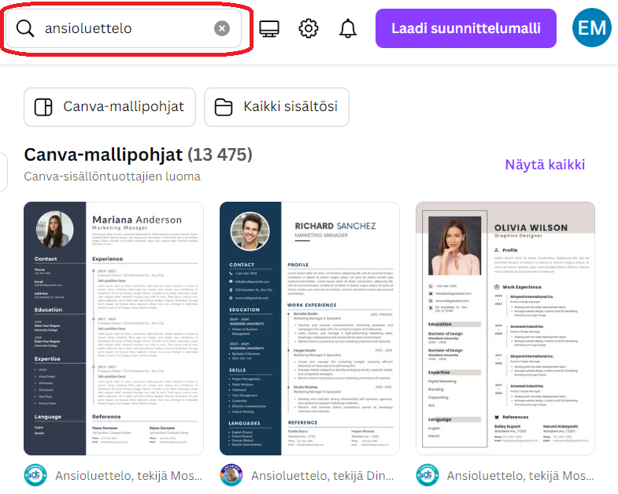

Canva-suunnittelutyökalu
Canva-ohjelma on työväline jonka avulla saadaan helposti aikaan edustava ansioluettelo
- Kokeile kirjautua edu-tunnuksellasi canva-sovelluksen käyttäjäksi.
- canva.com
Hae ansioluettelo-malleja hakutoiminnon kautta, valitse mielestäsi sopivin pohjaksi jota lähdet muokkaamaan.

Kerro itsestäsi
- Kuka olet ja mitä osaat
- Mistä olet kiinnostunut, mitä haluaisit tehdä isona
- Mitä olet opiskellut (tarkista oppilaitosten nimet ja päiväykset!)
- Omat IT-taidot: mitä ohjelmointikieliä osaat
- Voit tehdä CV:n englanniksi tai suomeksi